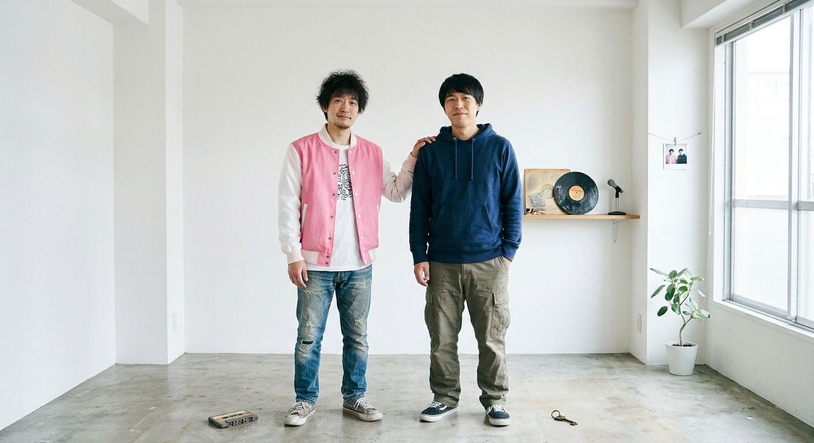
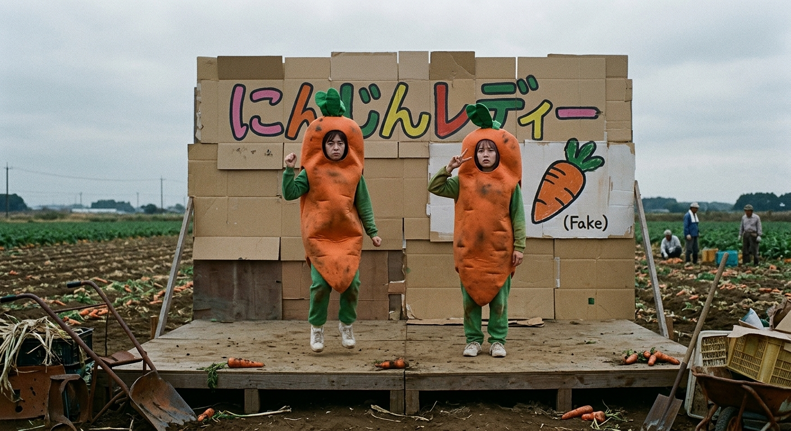
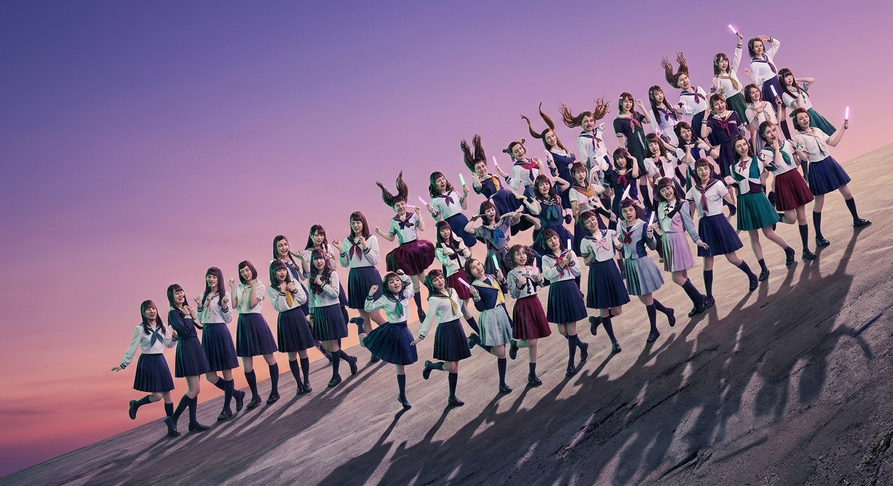

消しゴムブラザーズ
失恋ソングで人気を集める男性デュオ。別れたあとに残る小さな思い出を、二人のハーモニーで歌います。飾らない歌詞と、思わず口ずさむメロディーが持ち味です。
本サイトは講義課題として制作したものです。
ARTIST DEVELOPMENT
歌声、ダンス、ステージでの表現。ソロシンガーから大人数のアイドルまで、それぞれの持ち味が伝わる活動を一緒につくります。
講義課題のために設定した架空のアーティストです。

失恋ソングで人気を集める男性デュオ。別れたあとに残る小さな思い出を、二人のハーモニーで歌います。飾らない歌詞と、思わず口ずさむメロディーが持ち味です。

カラフルな衣装とダンスが特徴のガールズグループ。弾むようなポップスに合わせて、メンバーそれぞれの個性が見えるパフォーマンスを届けます。

48人の女性からなるアイドルグループ。かわいらしい衣装や振り付けと、大人数ならではのフォーメーションで、ステージに華やかさをつくります。
本人たちが表現したいことを聞き、どんな人に、どんな作品を届けたいかを考えます。楽曲のテーマに加え、衣装やアーティスト写真、ステージでの見せ方まで方向性を組み立てます。
声域や歌い方を踏まえて作曲・編曲し、歌詞の伝え方やグループ内での歌い分けを詰めます。レコーディングからライブでの披露まで、曲が届く場面を考えながら仕上げます。
リリースやライブ出演の計画を立て、日程や関係者との調整を行います。作品を発表したあとも、次にどんな活動をするかをアーティストと一緒に考えます。